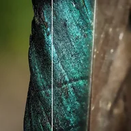

Ruisreductie

Verwijdert beeldruis met een randbehoudend bilateraal filter dat naburige pixels alleen middelt als hun kleuren op elkaar lijken.
Ruisreductie haalt korrel en ruis weg en probeert daarbij randen scherp te houden. Sterkte is hoeveel ruis er verdwijnt, Straal hoe ver het rond elke pixel kijkt en Detail hoeveel fijn detail er blijft. Te veel maakt huid en oppervlakken vlak.
Instellingen
| Instelling | Type | Bereik | Standaard |
|---|---|---|---|
| Sterkte | Getal | 0 tot 1 | 0.5 |
| Straal | Getal | 1 tot 6 | 2 |
| Detail | Getal | 0 tot 1 | 0.5 |